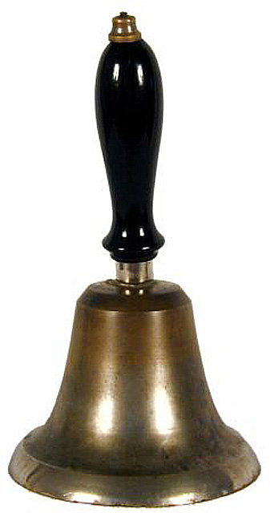

Il était une fois sur un petit bout de terre surnommé l’île aux fleurs, vivait une vielle femme de 93 ans du nom d’Aurélie
Vélayoudon. Elle n’était pas très grande de taille, le visage marqué par le temps qui n’enlevait rien à son regard enfantin
plein de malice. Elle avait pour habitude d’attacher ses longs cheveux en un petit chignon et ces mains étaient de ceux qu’un
photographe aurait voulut avoir dans ses banques d’images, elles étaient rugueuses, victimes d’un contraste intense qui révèle
le dur labeur de la travailleuse d’antan.
Petite, Aurélie travaillait déjà dans les champs de cannes et vendait aussi des sucreries et des pâtisseries traditionnelles. Ses parents étant pauvres, ils ne pouvaient pas lui offrir beaucoup de choses, mais ils l’aimaient de tous leurs cœurs. Elle n’a jamais été à l’école mais loin d’être idiote, ses années de sacrifices lui ont permis de se construire une grande maison.
« Mamie ! » lui cria son arrière-petit-fils en pleurs. Le petit Christophe âgé de 7 ans pleurait de tout son être après être tombé violemment au sol.
Sa grand- mère le ramassa, le porta et l’épousseta. Perdue dans ses pensées elle se dit que, oui la vie n’a pas été tendre avec elle, mais elle lui en a donnée tellement plus que tout ce qu’elle espérait. La grand-mère matriarche reçoit tant d’amour de la part de ses enfants, petits-enfants et arrière-petits-enfants destinés à un avenir meilleur. Jamais elle n’échangerait tant d’amour contre quoi que ce soit.
Email : thecleaurelie.@codeur.online
Tel : 0642 20 58 44
Site : thecleaurelieaugustin.com